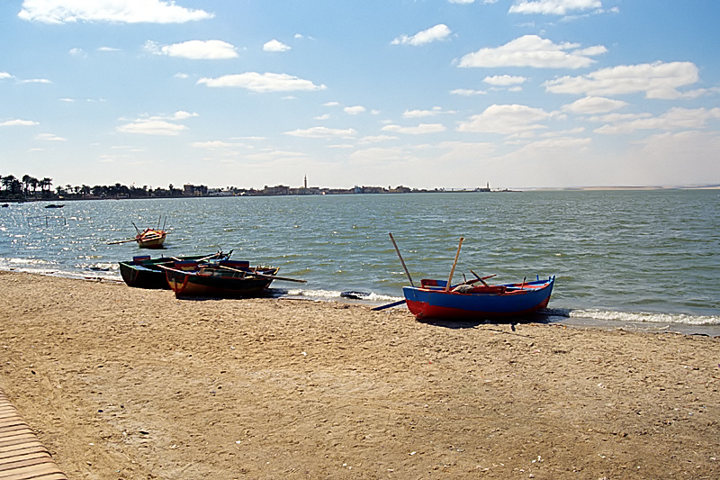
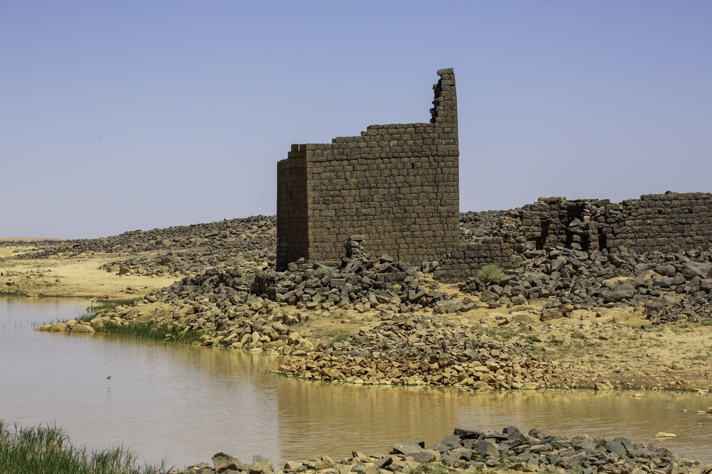

الخدمات المحلية وكلفة تنظيم الرحلة وتجربة الصقارة في برقع: ثلاث حالات لفهم علاقة الصيد السياحي بالتنمية.
حين يسافر الصياد إلى بلد آخر، لا يشتري فرصة الصيد وحدها. فهو يحتاج إلى مكان ينام فيه، ودليل يعرف الأرض، ووسيلة نقل، وطعام وخدمات ترافق رحلته. هنا تبدأ القيمة الاقتصادية التي يمكن أن تصل إلى القرى والمناطق البعيدة عن المراكز السياحية الكبرى. لكن وصولها ليس تلقائيًا؛ فقد ترتفع كلفة الرحلة، ولا ينال أهل المكان منها إلا القليل.
بعد جولتنا في بلدان الخليج ودول المغرب العربي، نختتم هذه السلسلة في مصر والعراق والأردن. ثلاث حالات مختلفة تطرح سؤالًا واحدًا: كيف يتحول الصيد المنظّم، حيث يُسمح به، إلى نشاط يخدم الاقتصاد المحلي، من دون أن يستهلك الحياة البرية التي يقوم عليها؟

مصر: قيمة الرحلة في ما يحيط بالصيد
تملك مصر تنوعًا يسمح بجمع أكثر من تجربة في رحلة واحدة. وفي الفيوم، مثلًا، تعرض هيئة تنشيط السياحة مزيجًا من الريف والبحيرات والصحراء والحرف التقليدية والطعام المحلي. هذه الخدمات تستطيع أن تزيد مدة إقامة الزائر وإنفاقه، بدل أن تبقى زيارته مرتبطة بنشاط واحد وساعات محدودة.
بالنسبة إلى منظّم رحلة صيد مرخّصة، يعني ذلك إمكان شراء خدمات من أصحاب الإقامة الريفية، والاستعانة بسائقين وأدلاء محليين، وإضافة زيارة حرفية أو وجبة من مطبخ المنطقة. لكن وجود البحيرة أو كثرة الطيور لا يكفيان لاعتبار المكان متاحًا للصيد؛ فالمنتج السياحي يجب أن يُبنى على التصاريح والأنواع والمواقع والمواعيد المسموح بها، لا على صورة جذابة في إعلان.
وفي عام 2026، أعلن جهاز شؤون البيئة تطبيق القرار رقم 559 المنظّم لأعمال الصيد، بالتوازي مع حملات لمواجهة المخالفات في البرلس. وتوضح هذه الإجراءات أن تنظيم الموسم وحماية مناطق تجمع الطيور وجهان لإدارة المورد نفسه؛ إذ لا يمكن تسويق رحلة مسؤولة خارج الضوابط التي تحميه.
ومن البرلس يأتي مثال عملي على توسيع مصادر الدخل المرتبطة بالطيور. تذكر جمعية حماية الطبيعة في مصر أن برنامجًا بدأ عام 2023 لتدريب صيادي طيور وجهة سياحية محلية على مراقبة الطيور، وأن جهة «كامب برلس» تعاونت مع صياد يستخدم قاربه في هذه الرحلات. هنا احتفظ الرجل بقيمة معرفته بالمكان وبفائدة قاربه، مع تقديم خدمة مختلفة للزائر.
ولا يحوّل ذلك مراقبة الطيور إلى اسم آخر للصيد، بل يبيّن إمكان تنويع العمل المحلي، خصوصًا عندما يُمنع الصيد في موقع أو يتوقف موسمه. فالدليل الذي يعرف حركة الطيور يستطيع أن يساعد على مشاهدتها وتصويرها أيضًا، والمركب والإقامة والطعام لا تفقد قيمتها بانتهاء الموسم.

رحلة أوسع، منفعة أكبر
الإقامة والإرشاد والنقل والطعام والحرف المحلية توسّع دائرة المستفيدين من زيارة الصياد، من دون الحاجة إلى زيادة عدد الطرائد.
العراق: تنظيم الدخول لا يكفي لصناعة التنمية
تقدّم الضوابط العراقية لموسم 2025–2026 مثالًا واضحًا على أن استقبال مجموعات الصيد الأجنبية يحتاج إلى ترتيبات تتجاوز حجز الإقامة. فالوثيقة المنشورة عبر سفارة الإمارات في بغداد حدّدت موسمًا من الأول من كانون الأول 2025 إلى الأول من شباط 2026، ومجموعات من خمسة إلى خمسة عشر صيادًا، مع إجراءات للدخول والمرافقة الأمنية وتصريح صيد مؤقت من وزارة الزراعة.
وأدرج جدول الكلفة مبلغ 125 ألف دولار لمجموعة من خمسة صيادين، يتضمن 25 ألف دولار لطعام وتنقّل المفارز الأمنية المرافقة. هذه أرقام تخص ترتيبات ذلك الموسم، وليست تسعيرة حالية لرحلة سياحية، ولا دليلًا على حجم ما وصل إلى المجتمعات المحلية.
وهنا تكمن المسألة الاقتصادية: ما الجزء الذي يذهب إلى الإجراءات والخدمات الأمنية، وما الجزء الذي يتحول إلى أجور أدلاء محليين، ومشتريات من المنتجين، وإقامة وطعام ونقل داخل المنطقة؟ لا تجيب الرسوم والكلف التنظيمية وحدها عن هذا السؤال، مهما ارتفعت.
إذا أريد لهذا النشاط أن يخدم التنمية، فينبغي أن تكون الخدمات المحلية جزءًا واضحًا من تصميمه: عقود مع مزوّدي النقل والإقامة، وتدريب لأدلاء يعرفون الأنواع والحدود المسموح بها، ومشتريات يمكن تتبّع استفادة أهل المنطقة منها. أما حماية الموائل والمياه، فتبقى شرطًا لاستمرار أي اقتصاد يعتمد على الحياة البرية.
والحديث عن الأراضي الرطبة العراقية هنا لا يجعل الأهوار تلقائيًا ساحات للصيد. قيمتها السياحية والبيئية أوسع من ذلك، وأي نشاط يجب أن يخضع لوضع الموقع القانوني والقيود المطبقة عليه. كما أن ضوابط موسم مضى لا تثبت فتح موسم جديد بالشروط نفسها.
أين يذهب إنفاق الزائر؟
قياس الأجور والمشتريات المحلية يكشف أثر الرحلة التنموي بصورة أدق من الاكتفاء بقيمة رسومها.
الأردن: الصقارة تتحوّل إلى تجربة سياحية في برقع
في البادية الشمالية الشرقية، تقدّم منطقة برقع مثالًا مباشرًا على ارتباط الصيد بالصقور بخدمات السفر والإقامة. وتعرض الجمعية الملكية لحماية الطبيعة تجربة تدريب الصقور على حبارى مكثّرة في الأسر، ضمن نطاق لا يتجاوز 20% من المحمية. وفي تشرين الثاني 2025، أدرجت الجمعية تجربة برقع في الصيد المستدام ضمن حالات دراسية ناجحة جرى تنفيذها في محمياتها.
أما الصورة السياحية لهذه التجربة، فتظهر في البرنامج الذي تعرضه شركة «فالكونري إكسبيرينسز» لزوار الأردن. فبحسب خدماتها المنشورة، تبدأ الرحلة باستقبال الصقارين في مطار الملكة علياء الدولي أو معبر العمري، وتضم الإقامة والوجبات والتنقّل بمركبات دفع رباعي ومرافقة مرشدين، إلى جانب مرافق للعناية بالصقور. هنا لا يشتري الزائر نشاطًا منفردًا؛ بل رحلة تتكامل فيها الضيافة والنقل والإرشاد والخدمات المتخصصة.
وهذه ليست دعوة إلى صيد الطيور البرية بلا قيود. فبحسب ضوابط البرنامج المنشورة لدى الشركة، يُحدَّد استخدام الحبارى المكثّرة في الأسر لتدريب الصقور، ويستبعد استعمال البنادق في هذه التجربة. والتمييز مهم: سياحة الصقارة المنظّمة لا تعني فتح المحمية كلها للصيد، ولا اعتبار مجموعات الحبارى البرية موردًا مفتوحًا للزائر.
تُظهر برقع، بهذه الخدمات المعلنة، كيف تمتد القيمة الاقتصادية للرحلة إلى ما حول الصيد: الإقامة والطعام والنقل والمعرفة الميدانية ورعاية الطيور. وهذه هي الخدمات التي يمكن أن تربط الزائر باقتصاد المنطقة، بدل اختزال الزيارة في عدد الطرائد. أما مقدار ما يعود منها إلى السكان، فيحتاج إلى بيانات عن التشغيل والتوريد المحلي؛ فلا يصح تحويل وجود البرنامج إلى رقم مفترض للوظائف أو الإيرادات.
رحلة متكاملة لا صيد مفتوح
تدريب الصقور على حبارى مكثّرة في الأسر، وإقامة ونقل وإرشاد: عناصر محددة في تجربة برقع، وليست إباحة عامة لصيد الطيور البرية.
ما الذي يبقى لأهل المكان؟
تجمع هذه الجولة ثلاثة دروس: تنويع خدمات الرحلة، والتمييز بين كلفتها وما يصل منها إلى السكان، وربط النشاط بخدمات سفر وإقامة محددة. ولا يحتاج نجاح الصيد السياحي إلى وعود مفتوحة بكثرة الطرائد؛ بل إلى مورد طبيعي مصان، وتنظيم يمكن تطبيقه، وخدمة تجعل الزائر يرغب في العودة.
وفي نهاية هذه السلسلة، يبقى المعيار بسيطًا: عندما يغادر الصياد، هل يترك وراءه دخلًا ومهارات وفرصًا لأهل المنطقة، مع بقاء الحياة البرية قادرة على التجدد؟ عندها فقط يصبح الحديث عن الصيد كمورد تنمية أكثر من عنوان جذاب.
المصادر: هيئة تنشيط السياحة المصرية؛ جهاز شؤون البيئة المصري؛ جمعية حماية الطبيعة في مصر؛ ضوابط موسم الصيد في العراق 2025–2026 المنشورة عبر سفارة دولة الإمارات في بغداد؛ الجمعية الملكية لحماية الطبيعة في الأردن؛ برنامج الأردن والخدمات المنشورة لدى شركة «فالكونري إكسبيرينسز».
الصور عبر ويكيميديا كومنز: Ahmed Alsarraf — “The Shakhtoor, a transportation device in the Iraqi marshes” (CC BY-SA 4.0)؛ Roland Unger — “QarunLake” (CC BY-SA 3.0)؛ Bashar Tabbah — “Qasr Burqu’ and Lake” (CC BY-SA 4.0). الصور الأصلية دون تعديل. · 1 · 2 · 3 · https://creativecommons.org/licenses/by-sa/4.0/ · https://creativecommons.org/licenses/by-sa/3.0/